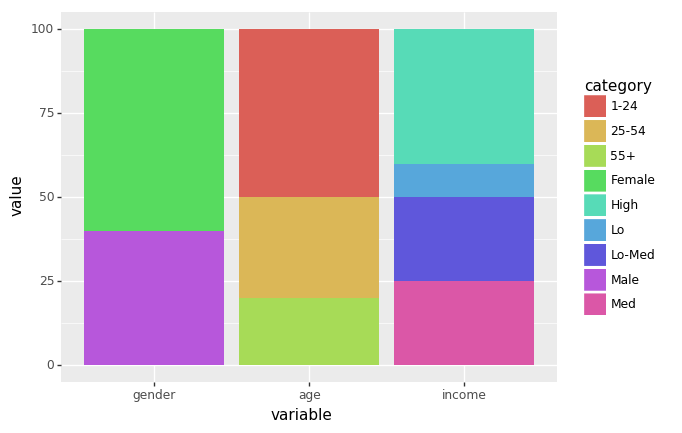
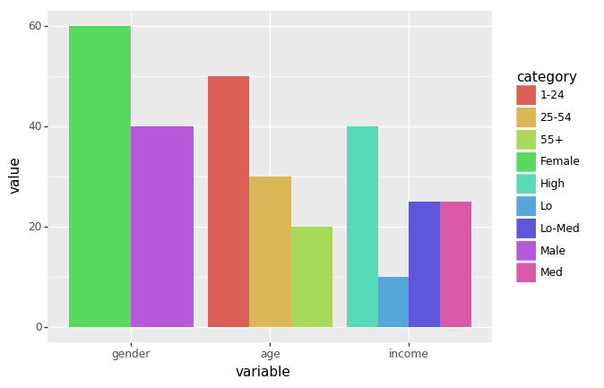
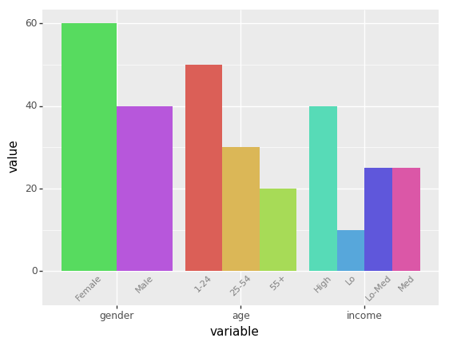

Plotline Simple
import pandas as pd
import numpy as np
from plotnine import *
%matplotlib inlinedf = pd.DataFrame({
'variable': ['gender', 'gender', 'age', 'age', 'age', 'income', 'income', 'income', 'income'],
'category': ['Female', 'Male', '1-24', '25-54', '55+', 'Lo', 'Lo-Med', 'Med', 'High'],
'value': [60, 40, 50, 30, 20, 10, 25, 25, 40],
})
df['variable'] = pd.Categorical(df['variable'], categories=['gender', 'age', 'income'])
df| variable | category | value | |
|---|---|---|---|
| 0 | gender | Female | 60 |
| 1 | gender | Male | 40 |
| 2 | age | 1-24 | 50 |
| 3 | age | 25-54 | 30 |
| 4 | age | 55+ | 20 |
| 5 | income | Lo | 10 |
| 6 | income | Lo-Med | 25 |
| 7 | income | Med | 25 |
| 8 | income | High | 40 |
(ggplot(df, aes(x='variable', y='value', fill='category'))
+ geom_col()
)
<ggplot: (-9223372036571546280)>
(ggplot(df, aes(x='variable', y='value', fill='category'))
+ geom_bar(stat='identity', position='dodge')) 
<ggplot: (316768548)>
dodge_text = position_dodge(width=0.9) # new
(ggplot(df, aes(x='variable', y='value', fill='category'))
+ geom_bar(stat='identity', position='dodge', show_legend=False) # modified
+ geom_text(aes(y=-.5, label='category'), # new
position=dodge_text,
color='gray', size=8, angle=45, va='top')
+ lims(y=(-5, 60)) # new
)/Users/rajacsp/anaconda3/envs/py36/lib/python3.6/site-packages/plotnine/layer.py:517: MatplotlibDeprecationWarning: isinstance(..., numbers.Number)
return not cbook.iterable(value) and (cbook.is_numlike(value) or

<ggplot: (316729208)>